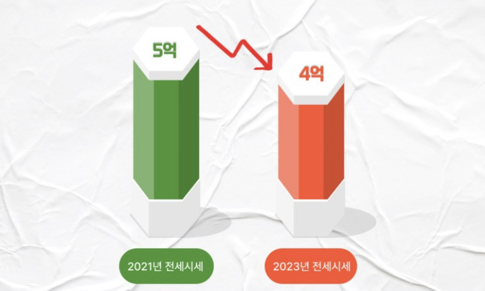
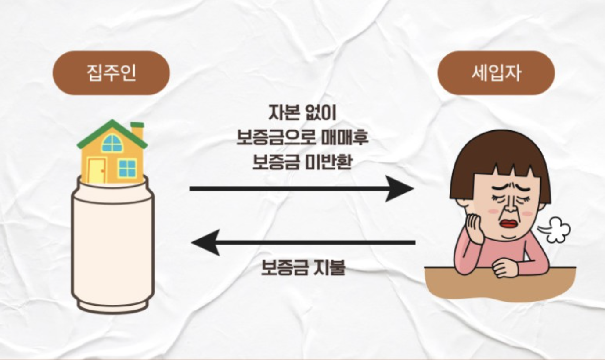
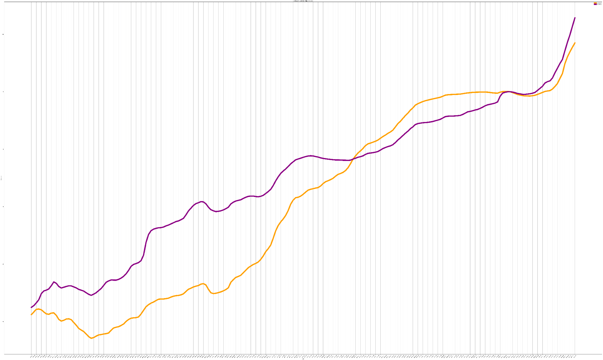
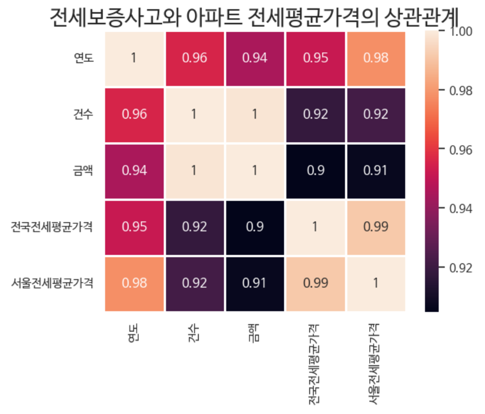

종류 알고가기
역전세
전세금이 계약 당시보다 크게 하락하여 집주인이 세입자에게 보증금을 돌려주지 못하는 상황을 의미
전세금이 계약 당시보다 크게 하락하여 집주인이 세입자에게 보증금을 돌려주지 못하는 상황을 의미
깡통전세
담보 대출과 전세 보증금이 매매가를 웃도는 전세 형태를 비유하는 말로 주택 가격 대비 전세보증금이 과도하게 높은 것을 의미
담보 대출과 전세 보증금이 매매가를 웃도는 전세 형태를 비유하는 말로 주택 가격 대비 전세보증금이 과도하게 높은 것을 의미
도전! 똑똑한 세입자
전국 주택가격지수 변화(2003-2021)

---매매
---전세
전세가격이 매매가격보다 높은 경우도 있음.
전세가격이 매매가격에 비해 지나치게 높으면 깡통전세를 의심!
전세가격이 하락하면 역전세를 의심!
*주의-전세가율이 매매가의 70%를 넘지 않도록 해야합니다.
혹시 서울에 집을 구하고자 하시나요?
서울시 자치구별 주택가격지수(매매) 변화(2003-2022)

서울시 자치구별 주택가격지수(전세) 변화(2003-2022)

서울시 자치구별 평균 매매가격지수-전세가격지수(2003-2022)


서울시도 전국과 비슷한 형태를 보임
그러나! 자치구별로 매매와 전세의 주택가격지수 차이가 다르기 때문에 꼼꼼하게 확인!아래는 가장 최근 데이터인 2022년도 자치구별 차이를 나타낸 그래프입니다.
색이 진할수록 매매와 전세의 차이가 많이나는 것을 의미합니다.

전세보증사고와 전세와 매매 평균 가격은 서로 상관이 있을까?

전세보증사고의 건수와 금액은 아파트 전세평균가격과 r=0.9의 높은 상관관계를 보이고 있습니다.
이를 볼때 전세사기와 주택전세가격은 서로 영향을 미치고 있다고 볼 수 있습니다.